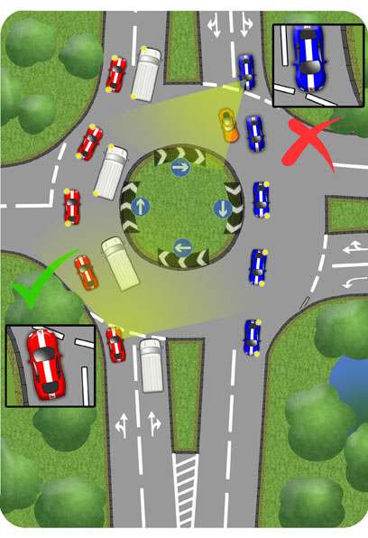
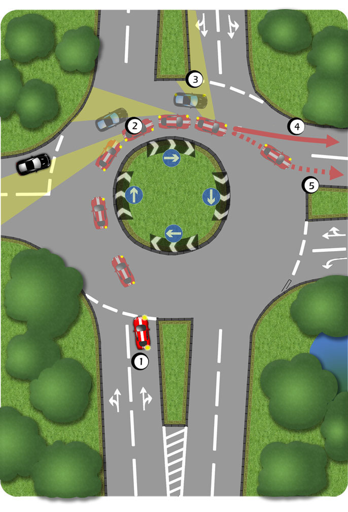

Where there are two or more lanes as you enter the roundabout, it is very important to choose the correct one.
Where there are no road markings and two lanes on the approach, remember:
Turning Left - Use the left lane.
Going Ahead - Use the left lane unless overtaking or planning to turn right shortly afterwards.
Turning Right - Use the right lane.

However, local rules may vary so keep a keen eye on road signs and markings.
Going Ahead
When you are driving in lanes, it is especially important to check your mirrors on the approach to a roundabout. If you see that there is no traffic following or alongside then it won’t be a problem to change lanes as you pass through. But if you are entering the roundabout with other traffic, it is crucial to stay in lane.
The red Learner car below manages to keep to the left lane by following the edge of the road at the mouth of the junction.

The blue learner car cuts across the lanes.This is partly because it follows the centre line at the mouth of the junction.
By looking up to the right and ahead, aswell as to the left on the approach, you will better gauge your position.
Turning Right

1.Unless road markings direct you otherwise, use the right lane to turn right. Use your mirrors, signal right and get into this lane early on the approach.
2.Use the main and left mirror before signalling left. These should be quick but effective glances, returning your attention immediately to the road ahead.
3.Try to check the nearside blind spot before exiting. Make this just a quick glance to the side so that your attention isn’t taken from the road in front.
4.Exit into the left lane but only if you’re sure it’s clear.
5.In this case, the presence of the black car requires the learner car to emerge into the right lane of its exit.